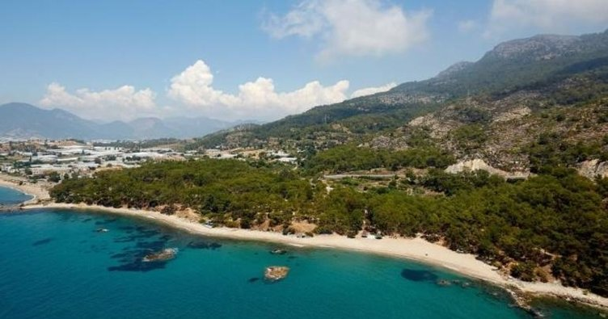

Dedegöl Dağı,Isparta
Doğal ve el değmemiş bir kamp alanı olan Dedegöl Dağı’a giderken kamp gereçlerinizi unutmamalısınız. Dedegöl Dağı, uzun yürüyüşler için de uygun bir alan.


Akdeniz Bölgesi’nde en fazla tercih edilen kamp alanlarından bir tanesi Olympos.
Tarihi dokusu ve doğal güzellikleriyle çok sayıda kampçının ilk tercihi olan Olympos’ta, çadır
ve karavan kampını tercih edebileceğiniz gibi ağaç evlerin bulunduğu kamp tesislerinde de konaklayabilirsiniz.
Bir tatlı su gölü olan Salda Gölü, eşsiz manzarasıyla kamp yapmak isteyenler için en ideal seçeneklerden biri. Salda Gölü’nde hem çadır ve karavanınızla kamp alanlarında konaklayabilir hem de tesislerde kalmayı seçebilirsiniz.
Kamp alanları bakımında Türkiye’nin en fazla seçenek sunan şehirlerinden bir olan Antalya’da kamp yapmak isterseniz en iyi seçeneklerden biri de Kaş. Birden fazla kamp tesisi bulunan Kaş’ta karavan ve çadır alanlarında kalabileceğiniz gibi tesiste yer alan bungalovlarda da konaklayabilirsiniz. İlçe merkezine yakın olması sebebiyle ihtiyaçlarınızı da kolaylıkla karşılayabilirsiniz.
Doğal ve el değmemiş bir kamp alanı olan Dedegöl Dağı’a giderken kamp gereçlerinizi unutmamalısınız. Dedegöl Dağı, uzun yürüyüşler için de uygun bir alan.
Olympos’un rakibi Adrasan da Akdeniz Bölgesi’nde en fazla tercih edilen kamp bölgelerinden biri. Olympos kadar popüler olmadığı için daha tenha olan Adrasan, hem çadır hem de karavan kampı için uygun. Pek çok tesisin yer aldığı Adrasan’da ihtiyaçlarınıza kolaylıkla ulaşabilir, tesislerde konaklamayı tercih edebilirsiniz.
Akdeniz’in saklı cennetlerinden biri kabul edilen Taşucu, hem çadır hem de karavan kampı için en ideal seçeneklerden biri. Doğayla iç içe olmayı ve sessizliği tercih ediyorsanız ilk durağınız Taşucu olmalı. Kamp tesislerinin bulunduğu ilçede bungalovlarda da konaklayabilirsiniz.
Plaja, tırmanma alanlarına ve yürüyüş parkurlarına sahip olan Geyikbayırı’nda kamp tesisleri de bulunuyor. Antalya’ya yaklaşık 20 kilometre uzaklıkta olan Geyikbayırı’nda ihtiyaçlarınızı karşılayabileceğiniz işletmelere kolaylıkla ulaşabilirsiniz.
Akdeniz’in kıyısında, tarihi ve doğal güzellikleriyle pek çok kampçının dikkatini çeken Hatay’da, sahil kenarında ve Asi Nehri’nin çevresinde çeşitli kamp alanları ve kamp tesisleri bulunuyor.
Çok sayıda kamp alanı ve tesisiyle Mersin de kampçılar için en ideal şehirlerden biri. Doğayla iç içe olmak, doğayı gözlemlemek ve kalabalıktan uzakta tatil yapmak istiyorsanız, Anamur’daki kamp tesislerinde çadır veya karavanınızda konaklayabilirsiniz.
Antalya’da kamp alanları bakımından zengin olan bir başka ilçe, Toros Dağları’yla çevrili olan Manavgat. Torosların eteklerinde, eşsiz kumsallarıyla dikkat çeken Manavgat, kamp alanları ve tesisleriyle en fazla tercih edilen kamp bölgelerinden biri.